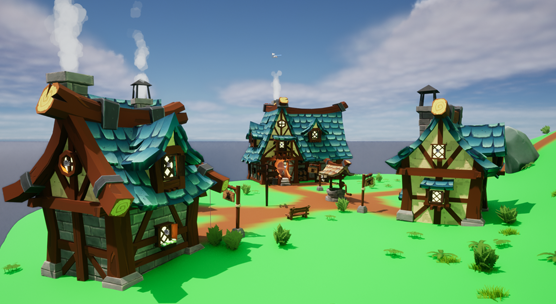
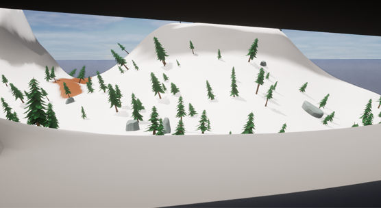

The main obejctive of the entire game is to collect a certain number of artifacts, and bring them to 'The Vault' in a nearby cave where the player will be able to obtain unspeakable riches and escape the island. These artifacts will be scattered around the island in important places and the player will have to search for them all.

Areas
On the island, there are a few different areas. On the lower parts of the island closer to the coast there are numerous different grasslands around the island. As the height rises you get to the mountain area. This is a very snowy, cold and harsh area that the player will have a challenge to survive in.

Story Overview
The in-game main character heard a rumor that the island contained unspeakable treasure and he set off to obtain it. As he got closer to the island a storm arrived and uncontrollably smashed his ship into the mountains on the island, stranding him. The player must obtain the materials and money to repair the ship to escape.